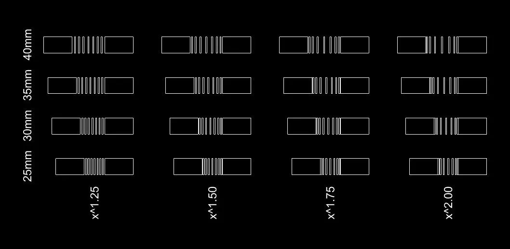
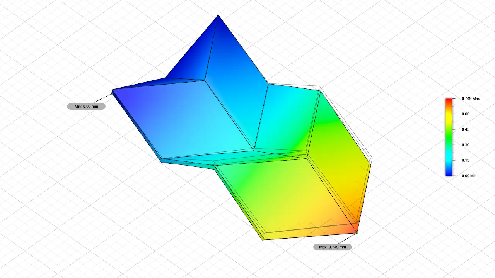
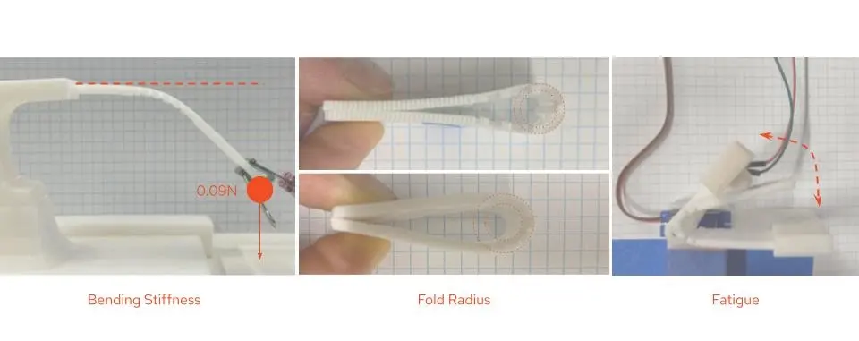
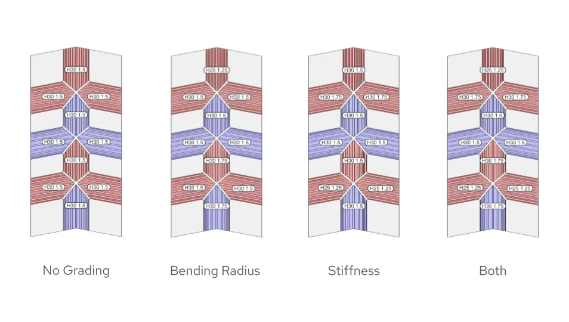

← all workresearch
Earwig Biomimetics

- context
- ITECH Seminar
- year
- 2024
- type
- research
This study explores the application of biomimetics in additive manufacturing, focusing on achieving variable and distributed stiffness inspired by insect hindwings. It abstracts and translates compact folding and stiffness gradient of earwig wings into a mono-material, durable, and elastic hinge. Through the creation of thermoplastic polyurethane (TPU) toolpath gradients, the research evaluates deflection, fatigue resistance and folding bending radius, finding an optimal gradient for minimized deformation and enhanced durability. The result is a Miura-ori prototype demonstrating the performance of an array of developed hinges in compact folding condition.







